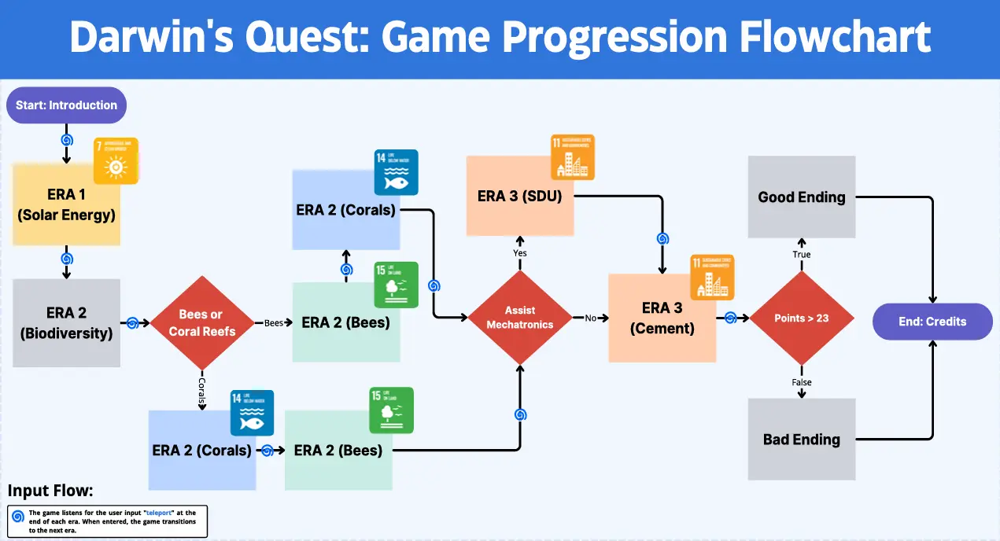
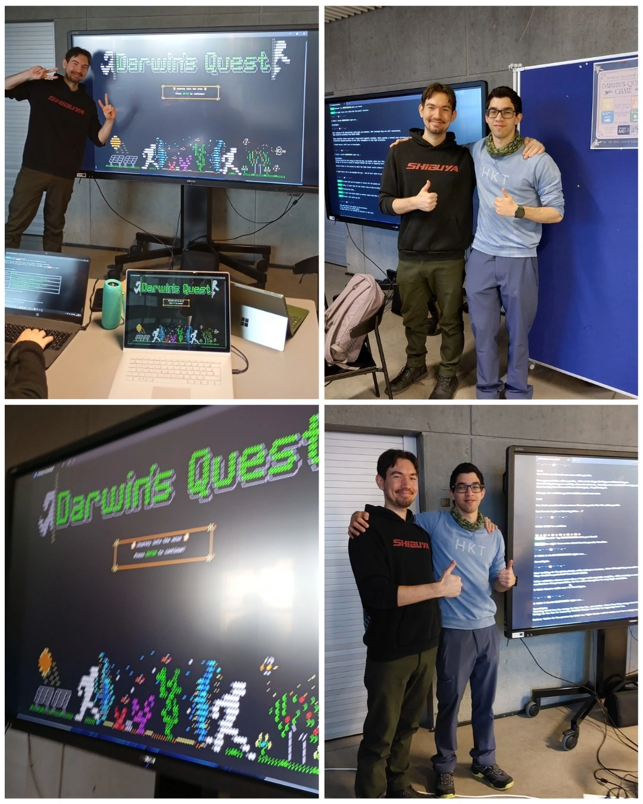

Darwin's Quest is a text-based adventure game developed as a 1st-semester project at the University of Southern Denmark (SDU). It was a collaborative effort by a team of 5 students, built using C# and the World of Zuul framework.
Interconnectivity of Eras
The core of the game lies in the interconnectedness of the Sustainable Development Goals (SDGs). The narrative demonstrates how actions in one era influence the possibilities in another:
Era 1 (Energy): Darwin (the main character played by the player) sacrifices energy to travel, emphasizing resource scarcity (SDG 7).Era 2 (Biodiversity): Protecting bees and reefs secures vital resources for the future (SDG 14, 15).Era 3 (Sustainable Materials): Innovations like green cement rely on the healthy ecosystems of Era 2 (SDG 11).
The game logic ensures that the player's journey flows through these connected themes, as visualized below:

SDU Tek Expo Showcase
The project was displayed at the annual University Tek Expo, where it was played by visiting high school students and students from other faculties. This event allowed the team to collect valuable user feedback and experience data to evaluate the game's learning outcomes.

Team Collaboration
To manage the complexity, the game's three main eras were divided among team members, allowing for focused development on specific narrative arcs and mechanics. Detailed contributions for each era are presented in the end credits upon finishing the game, acknowledging the specific work of each developer.
Project Report
For a detailed look at the problem analysis, design choices, and implementation details, you can view the full project report.